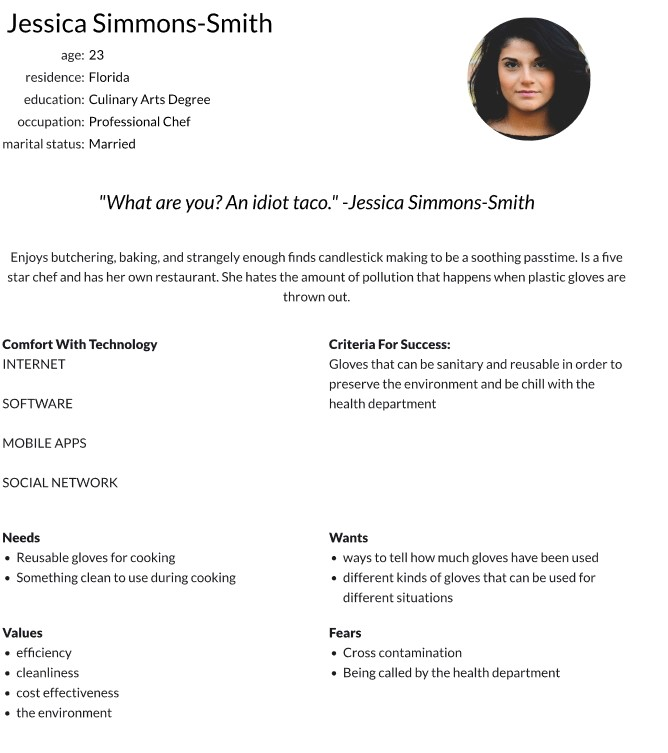
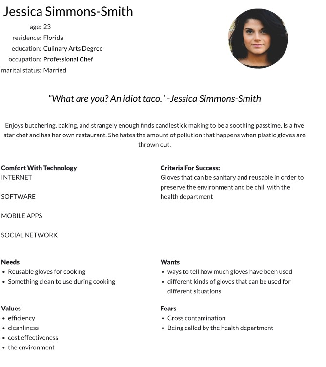

Problem statement: InstaGlove
Team Personas: Personas
Merged Storyboards
I want to cover my hands, but don’t always want to deal with the heat or cloth disruption of gloves. Persona: My persona is Jessica Simmons-Smith. She's a chef who is hard working and likes to butch, bake, and candle make. For the gloves, Jessica wants something clean and environmentally friendly. Storyboard: Jessica is looking for a less wasteful, yet still clean glove. Then someone hands her one of our gloves. She tries it on and is amazed at the ease of use. She then goes back to cooking, not worried about getting stuff on her gloves because they can clean themselves.